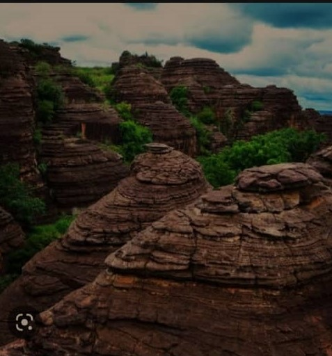

BANFORA
Accueil
Patrimoine
Reservation d'hotel
Galerie
La Belle Cité du Paysan Noir
Les Patrimoines Touristiques de la ville de Banfora
La mare aux hippopotames de Tingrela
Les pics de Sindou
Les domes de Fabedougou

La SN SOSUCO
Les falaises de Niansogoni
Les cascades de Karfiliga
Le barrage de Niofila
Site web de Banfora reélisé par Matou et Mariam